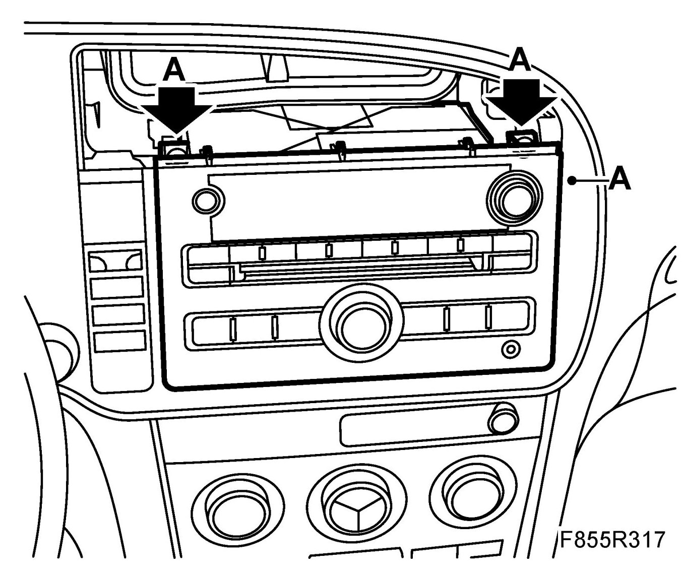
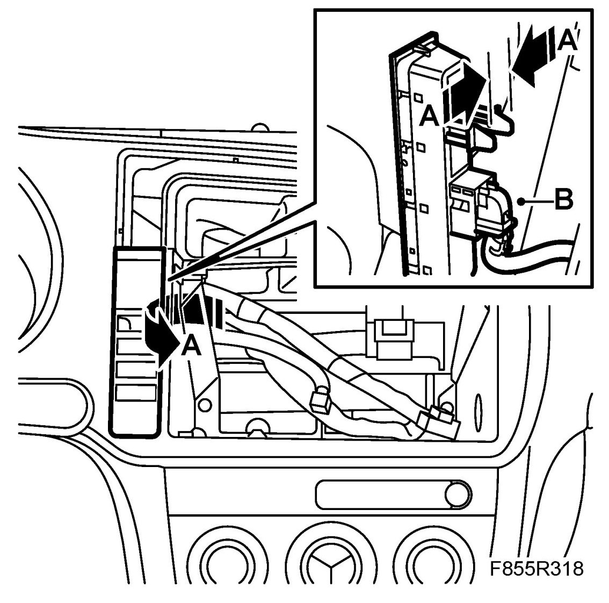
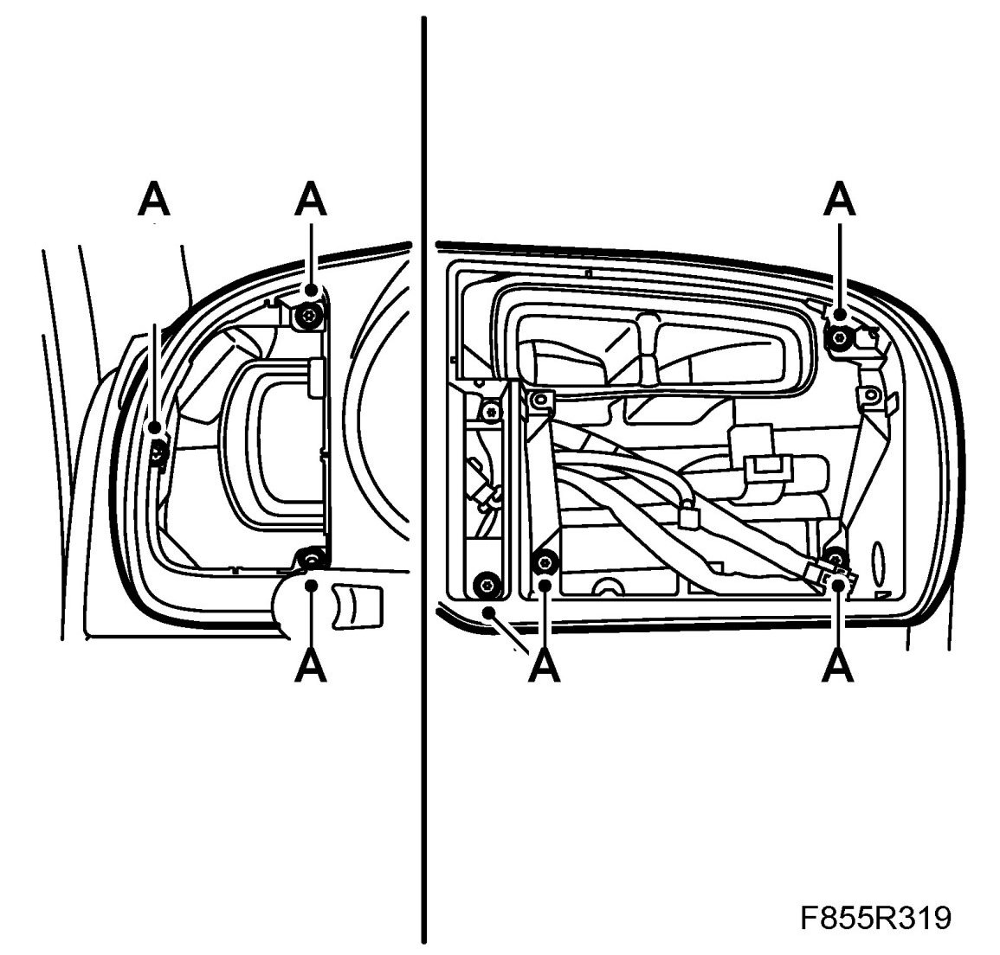
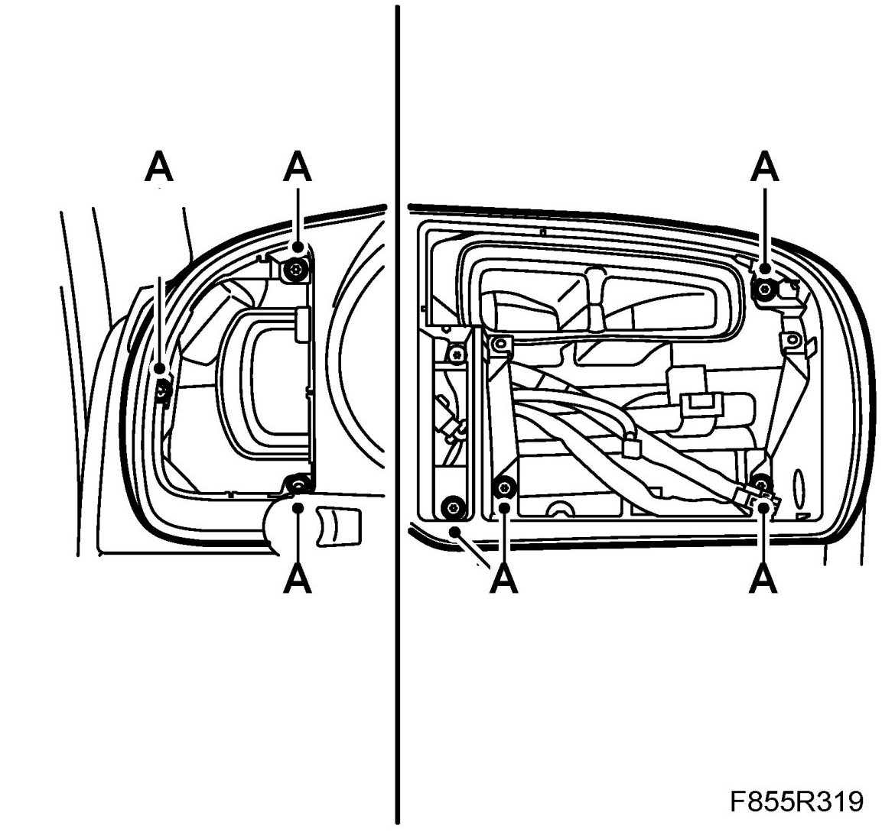
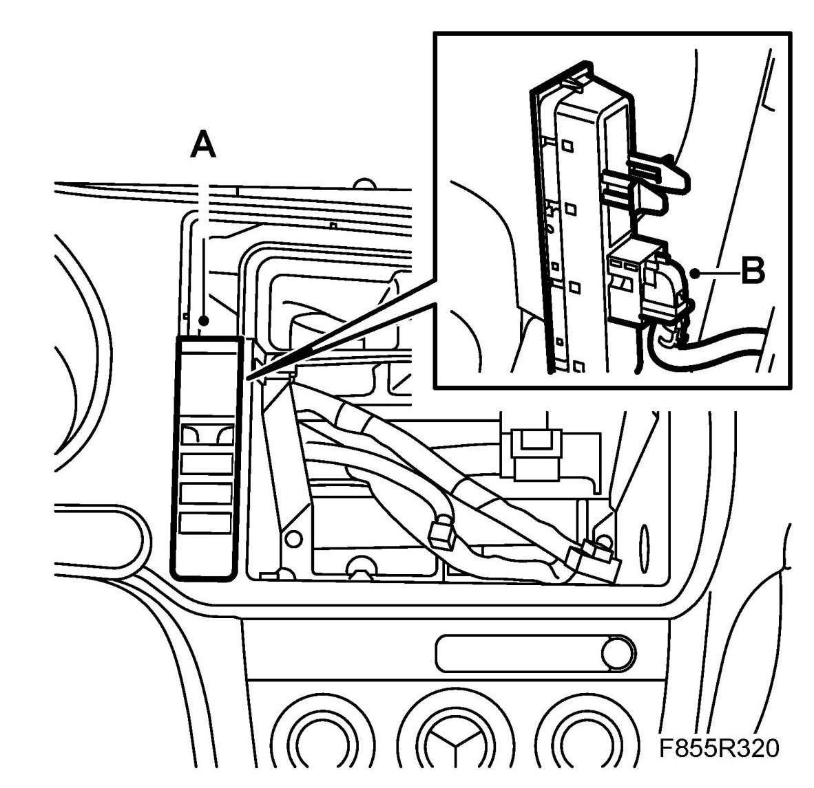
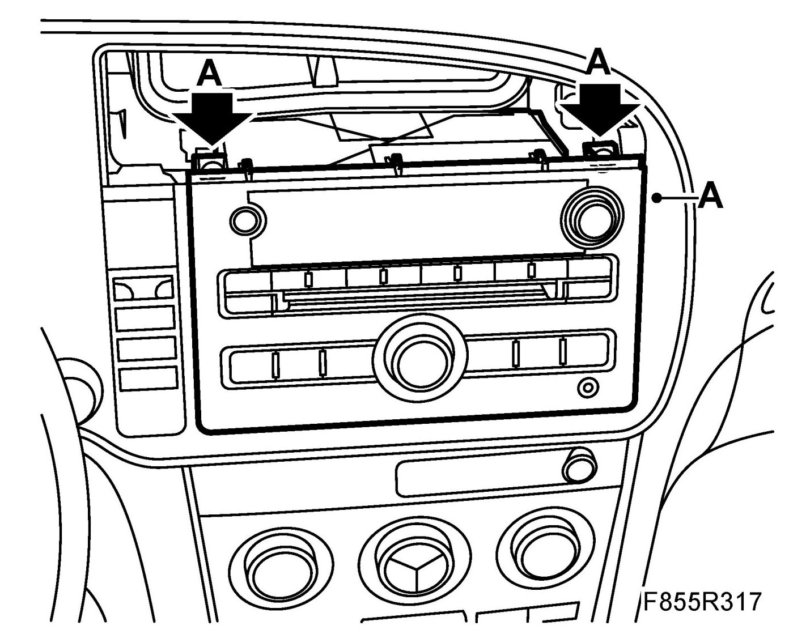

Main Instrument Frame
Main Instrument Frame
To remove
1. Remove Air vent, panel, driver and Centre air vent, panel
2. Remove the radio/navigation unit bolts (A). Raise the unit upwards/outwards.

3. Remove the switch panel (A) by pressing the two tabs on the back together and the pressing the switch panel forward starting at its top edge. Unplug the connector (B).

4. Adjust the steering wheel so that is as far out and as far down as possible.
5. Remove the MIU frame (A).

To fit
1. Fit the MIU frame (A).

2. Plug in the connector (B). Fit the switch panel (A) by fitting the catch into its lower edge and then pressing the upper edge into place.

3. Fit the radio/navigation unit and its bolts (A).

4. Align and fit the Centre air vent, panel and Air vent, panel, driver.